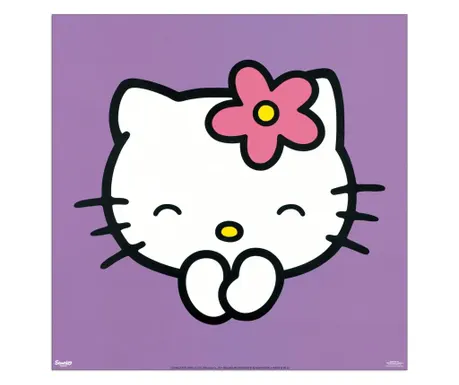

Introducere
Hello Kitty este un personaj fictiv produs de compania japoneză Sanrio. Acest personaj a fost creat de către Yuko Shimizu, iar în prezent este proiectat de către Yuko Yamaguchi. Hello Kitty reprezintă o pisicuţă albă care zâmbeşte şi poartă mereu o fundiţă roşie.Hello Kitty apare pentru prima dată pe o pungă, în Japonia în anul 1974, iar mai târziu,în 1976, acesta ajunge şi în Statele Unite. Caracterul reprezintă un segment din cultura japoneză populară . Până în anul 2010, Sanrio a reuş it să facă din Hello Kitty un fenomen de marketing la nivel global, ce a adus câştiguri în valoare de 5 miliarde de dolari pe an. În 2014, când Hello Kitty a împlinit 40 de ani, valoarea ei reprezenta aproximativ 7 miliarde de dolari pe an, toate acestea fără publicitate.

Pagina principală